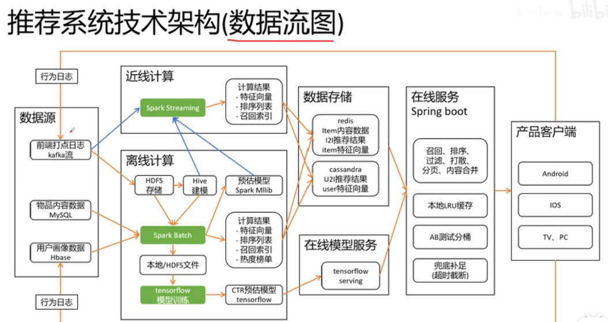

2. 推荐算法¶
3. 1 简介¶
3.1. 1.1 推荐系统流程¶
3.1.1. 1 召回¶
协同过滤召回
内容相似召回
图算法召回
热门召回
新课召回
3.1.3. 3 调整¶
去重
已读/已购过滤
在线过滤
热门补足
分页提取
合并内容信息
3.2. 1.2 Netflix经典推荐系统架构¶
3.3. 1.3 推荐系统架构图¶

4. 2 召回¶
协同过滤召回
内容相似召回
图算法召回
热门召回
新课召回
聚类推荐
4.1. 2.1 召回路径¶
4.2. 2.2 CB(Content-based Recommendations)¶
基于内容的推荐
4.2.1. 1 算法流程¶
Item Representation: 特征提取
Profile Learning: 计算用户特征向量
Recommendation Generation: 推荐生成
4.2.2. 2 优缺点¶
优点:
不需要其他用户数据
能给具有独特口味的用户推荐
可以推荐最新的冷门的物品
容易做推荐结果的解释
缺点
很难找到能够表达物体的标签,有时需要人工标签
过于局限于自己的世界,很难挖掘出用户的潜在数据
新用户没有行为,无法推荐
4.3. 2.3 CF(CollaborativeFiltering) 协同过滤算法¶
4.4. 2.4 多路召回融合排序¶
5. 相关资料¶
黑马推荐系统课程 -B站: 2019年的课程